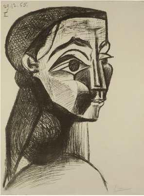
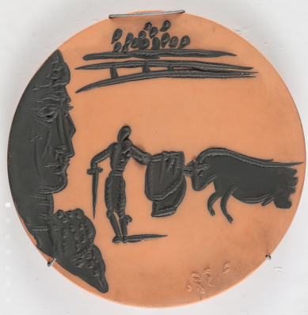
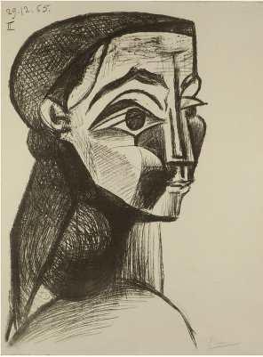
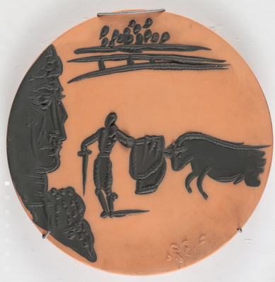
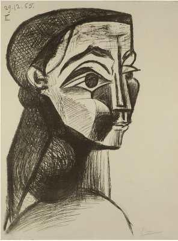
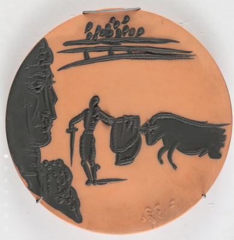
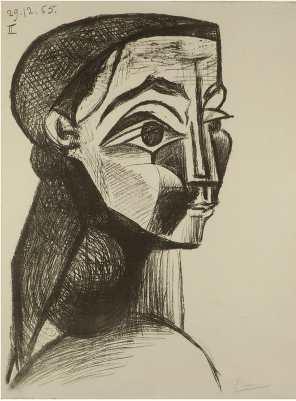
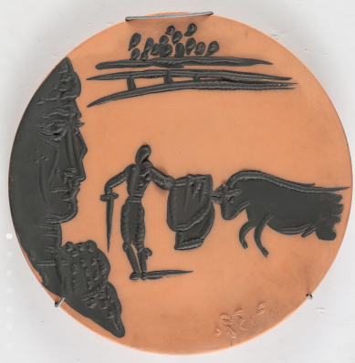

 



A cincuenta años de la muerte del artista español Pablo Picasso (Málaga, 1881-Mougins, Francia, 1973), el Bellas Artes se suma a las exposiciones internacionales en torno a esta conmemoración, con la muestra “Picasso en el patrimonio del Museo”, que reúne en la sala 33 más de 30 papeles y cerámicas de su autoría que integran la colección. “Picasso ha abrazado el arte con tal pasión y convicción que lo ha llevado a ser el gran experimentador del siglo XX ‒afirma el director del Bellas Artes, Andrés Duprat sobre el célebre artista‒. Sus indagaciones y creaciones formales y sus búsquedas técnicas han ampliado consistentemente los límites del arte de forma definitiva. Se podría decir perfectamente que hay un antes y un después de Picasso en la historia del arte”. “A medio siglo de su fallecimiento, y en sintonía con los principales museos del mundo, queríamos sumarnos a este aniversario presentando una serie de piezas de nuestra colección que dan cuenta de su talento, y de sus múltiples intereses y búsquedas a través del dibujo, el grabado y la cerámica ‒agrega Duprat‒. Además, se exhibirá ‘Mujer acostada’, óleo de gran formato de 1931, una pieza mayor de nuestro acervo”. La exposición, con curaduría de Paola Melgarejo, investigadora del Museo, recorre temas típicos del artista, a partir de las diversas técnicas que abordó. “A lo largo de su vida, entre 1899 y 1972, Picasso buscó dominar el grabado desde diferentes medios, como aguatinta, aguafuerte, punta seca, linograbado y litografía, hasta transformarse en un verdadero referente”, explica la curadora. “Desde la década de 1940 ‒añade‒, también se especializó en la cerámica, a la que consideró una técnica artística consagrada, y por treinta años experimentó con diversas soluciones en las formas y en los colores, representando sobre la arcilla los temas que lo apasionaron”. Las obras en exhibición, datadas entre 1905-1959, incluyen grabados, cerámicas, dibujos y dos pinturas realizados desde su etapa de juventud, entre los que hay retratos de las mujeres importantes de su vida o escenas en su atelier, y también piezas que muestran su interés por la situación política de entreguerras y la representación de animales fantásticos, con los que se identificó y que hoy son símbolos picassianos universalmente reconocibles. La muestra está organizada en cinco núcleos temáticos. El inicial, “Primer tiempo. De la figuración al cubismo”, da cuenta de sus primeros grabados en punta seca y al aguafuerte, realizados a comienzos del siglo XX, época en la que conoció estas técnicas que lo fascinaron y con las que estampó arlequines y personajes de circo en sus momentos cotidianos, incluyendo mujeres desnudas en escenas de baño. De este momento es la “Serie de los Saltimbanquis” ‒de la que se exhibe “El baño”‒, y la acuarela “Mujer desnuda de espalda”: en la pieza, la modelo representada podría ser Fernande Olivier, su primera pareja. Hacia 1908-1909, experimentó el lenguaje del cubismo en grabados, en obras como “Dos figuras desnudas: mujer con una guitarra y niño con una copa” o “Naturaleza muerta con frutero”. A partir de 1911, sus chapas fueron adquiridas por importantes marchands, quienes las hicieron estampar y vendieron como copias sueltas, editadas en libros o en carpetas. “En el atelier. El artista y su modelo” es el segundo eje y reúne obras donde aparecen representados el artista y las mujeres cercanas a él, como su joven amante Marie-Thérèse Walter, que posó para pinturas y grabados sobre este tema en las décadas del 20 y del 30. Trece de estas obras se publicaron en 1931 en una edición de “La obra maestra desconocida”, del francés Honoré de Balzac. En la serie de grabados sobre “El taller del escultor”, realizada entre 1933 y 1934, puede verse su interés por el arte clásico, ya que el escultor (tal vez el propio Picasso) aparece personificado como un dios de la Grecia antigua. “Femmes. Retratos de mujeres” identifica el tercer conjunto de obras exhibidas: son imágenes de algunas de las mujeres que marcaron su vida y se reiteran por etapas, formando parte de sus búsquedas experimentales en torno a la figuración y al cubismo. Luego de relacionarse con Fernande Olivier, Olga Khokhlova, Marie-Thérèse Walter y Dora Maar, en los últimos 30 años de su trayectoria, Picasso se vinculó con Françoise Gilot y Jacqueline Roque. Retrató a la primera en numerosas pinturas y litografías, en imágenes figurativas y en otras donde ensayó variantes geométricas; mientras que a Roque, a quien conoció en un taller de cerámica, la representó sin cesar al óleo, en grabados y en cerámicas hasta su muerte, en 1973. El cuarto núcleo, “Hacia el Guernica. Arte y compromiso político”, recoge la serie de grabados que, en 1937, en plena Guerra Civil Española, el gobierno republicano le encargó a Picasso para el pabellón del país en la Exposición Internacional de París, junto con un mural, el “Guernica”. A estos grabados, que se vendían en la feria, los llamó “Sueño y mentira de Franco”, y componían una sátira al general Francisco Franco, que aparece ejerciendo su acción destructiva. El quinto y último eje expositivo es “Metamorfosis. Entre lo animal y lo humano: faunos, centauros, toros y caballos” y presenta escenas de tauromaquia, espectáculo que lo apasionó desde su niñez, en la serie “Corrida de toros”, formada por ocho platos de loza roja realizados en 1959 en la Factoría Madoura. También se muestran, entre otras obras en papel, la aguatinta “Caballo”, creada para ilustrar “Historia Natural”, la enciclopedia del naturalista Georges Louis Leclerc, Conde de Buffon; y el plato de loza blanca “Cabeza de Fauno”, de 1955. La exposición también evoca, a partir de documentación y fotografías del archivo institucional, la Comisión Pro-Picasso del Bellas Artes, formada en 1956, durante la gestión de Jorge Romero Brest como director, con la intención de recaudar fondos para adquirir obras del artista malagueño. Esta comisión donó al acervo 16 piezas, presentadas en 1961 en la muestra “Picasso cumple 80 años”. Por otra parte, se recuerda “Picasso: Maestro del grabado”, la exhibición celebrada en el Museo en 1973, que coincidió con el año del fallecimiento del artista y estuvo integrada por 100 obras provenientes de la colección del Museo de Arte Moderno de Nueva York (MoMA).
Nació en Málaga, al sur de España, el 25 de octubre de 1881. Comenzó a pintar a los ocho años, bajo la guía de su padre, José Ruiz y Blasco, pintor y profesor de dibujo. A los catorce años, inició sus estudios en la Academia de Bellas Artes de Barcelona y más tarde los continuó en la Academia de San Fernando, en Madrid. Si bien incorporó el lenguaje académico en su pintura, con buena repercusión, encontró esta enseñanza anticuada y pronto la abandonó. En 1904, se instaló en París, y aunque volverá de visita a España, vivirá hasta su muerte en Francia. En su etapa de juventud, buscó su propio estilo, realizó sus obras de los períodos azul primero, y rosa después, en pinturas protagonizadas por mendigos y arlequines, y en 1907, comenzó a experimentar con el cubismo en su pintura "Las señoritas de Avignon", con influencia de las máscaras africanas que observó en el Museo Etnográfico de París. En esta etapa experimentó la vida bohemia, en compañía de poetas y pintores como Guillaume Apollinaire, Amedeo Modigliani y Juan Gris. Durante los siguientes años, en contacto permanente con Georges Braque, practicó el cubismo analítico primero, representando las figuras desde múltiples puntos de vista, y el cubismo sintético después, a partir de unas formas esquemáticas en las que incorporó los papeles pegados. En este período, sus obras comenzaron a ser adquiridas por importantes coleccionistas y marchands, como Gertrude Setein, Daniel-Henry Kahnweiler y Ambroise Vollard. Durante la Primera Guerra Mundial continuó trabajando; en 1917, colaboró con diseños de trajes y decorados para la para la obra "Parade", escrita por Jean Cocteau, representada por la compañía de Ballet Ruso, dirigida por Sergéi Diágilev. En este contexto conoció a Olga Khokhlova, una bailarina rusa, con la que se casó poco después y con quien tuvo un hijo. En los años veinte, Picasso pintó desde diferentes lenguajes artísticos. En algunas obras, se observa el retorno a las formas clásicas, a partir de figuras volumétricas y macizas, y en otras, su desintegración. En esta etapa, su fama se acrecentó y vendió gran cantidad de piezas a través de su marchand Paul Rosenberg. Además, estuvo en contacto con diferentes círculos artísticos, los escritores de la “Generación perdida”, los integrantes del grupo surrealista, y con diseñadores de moda, como Gabrielle Chanel, y los bailarines y coreógrafos ligados al Ballet Ruso, ya que siguió realizando diseños para esta compañía. En la década del treinta, intercambió ideas y realizó viajes de verano con artistas y escritores del grupo surrealista, como André Breton y Paul Éluard, e incorporó este lenguaje en algunas de sus obras: pintó a su amante Marie-Thérèse Walter con formas de animales o frutas, de gran carga erótica. Con ella tuvo hija, a quien también retrató. En este período, además, trabajó en sus series de grabados, en los que representó escenas típicas de su producción, como la tauromaquia, para libros y publicaciones en carpetas, y realizó gran cantidad de esculturas. Al inicio de la Guerra Civil española, e influenciado por la postura política de la pintora y fotógrafa Dora Maar, su pareja por entonces, pintó el "Guernica" en 1937, para ser exhibido en la Exposición Internacional de París, además de la serie de grabados "Sueño y mentira de Franco". En la Segunda Guerra Mundial, durante la Ocupación alemana de París desde junio de 1940, mientras el Guernica se exhibía en varios países, su arte fue calificado de “degenerado” por el nazismo. Tras la Liberación de la ciudad en agosto de 1944, se afilió al Partido Comunista Francés. Esta postura antifascista le impidió volver a su país, ya que la dictadura de Francisco Franco se extendió hasta después de su muerte. Ya muy famoso y solicitado, en los años cuarenta se mudó a una zona más tranquila, vivió en diferentes localidades del sur francés con su pareja Françoise Gilot, con quien tuvo dos hijos, en una etapa prolífica en la que hizo pinturas, dibujos, grabados y esculturas. Además, en Vallauris, en la manufactura Madoura, experimentó con la técnica de la cerámica. En la siguiente década, reinterpretó las obras más conocidas de Diego Velázquez, Eugène Delacroix y Gustave Courbet, y realizó numerosos retratos de su última esposa, Jacqueline Roque. Tras la complicación de un edema pulmonar, Picasso murió en su casa de Mougins, en el sur francés, el 8 de abril de 1973, a los 91 años.